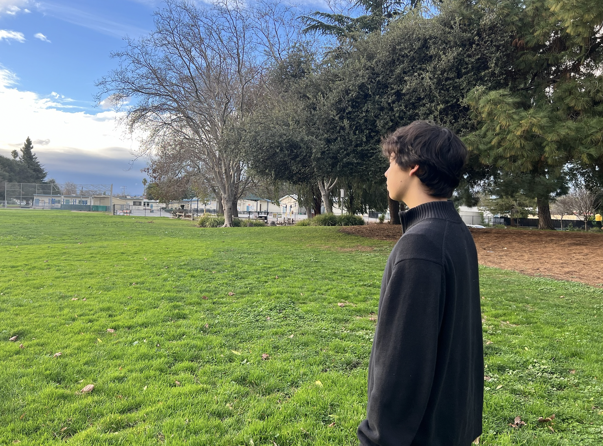

Esoterify: Cryptographic Composition Toolkit
March 23, 2026 • What are the tradeoffs of each encryption method? • 3201 words
readHi! I'm Noah, and I love [building], [researching, writing], and [talking] to people about how to use technology to make a positive impact on the world.
-----

Right now, I'm a freshman at UT Austin studying Computer Science with a minor in Core Texts and Ideas.
I'm training as a SOC Analyst at UT's Information Security Office, working on Systems Security Research, and building a few other things.
Long term, I'd love to contribute to the next layer of defense as we build new computer systems and AI infrastructure.
Here's a little timeline about what I've been up to, where I am now, and where I hope to go someday.
TIMELINE
-----
The world is changing fast, and so am I. In general, I want to use my { integrity, curiosity, creativity, adaptability } for the benefit of { humanity, community, freedom }.
I'm into tech because I love learning, and I want to evolve fast in the face of cutting edge breakthroughs.
In no particular order, these are my other current obsessions.
-----
Interests
If anything above resonated with you, don't hesitate to [connect]. And if you're all the way down here, thank you so much for reading.
peace,
noah
March 23, 2026 • What are the tradeoffs of each encryption method? • 3201 words
readFebruary 17, 2026 • What should we strive for? • 1280 words
readFebruary 9, 2026 • Why does the full adder work? • 661 words
readJanuary 31, 2026 • What makes us human? • 554 words
readJanuary 23, 2026 • Does tone make LLMs more dangerous? • 975 words
readCryptographic Chaining Toolkit. I took the RSA, AES, ChaCha20, and Caesar ciphers and experimented with their combinations. I compared the computational efficiency of each method, and discussed when it might be valuable to use a combo like RSA + AES.
see writeup see code
Penny makes financial advice cuter than ever! Penny uses Gemini API to analyze financial data and generate financial tips based on the specifics of the data. Built for HackTX with Heather Kim, Avery Allen, and Isaac Fleitas.
see code
The Ephemeral Social Media Site. This full-stack project was designed with Supabase, SQL, Google Auth, and vanilla JS. It includes a multi-layered hate speech filter and auto-deletion function. Over 1200 posts and 40 users!
try it out!
Custom language models. Experimental LLM project based on a tutorial by Andrej Karpathy. I built a language model from scratch and implemented self-attention using his tutorial. Users input custom datasets and get custom language models based on their writing styles.

Eco Empire challenges players to manage a virtual power plant, balancing economic growth and environmental sustainability.
try it out! see code
Take control of your brainrot. Tired of getting dopamine hits from infinite scroll apps? Use the brainrot button: a fun app built with Node, Express, and Node.
try it out! see code
What are the chances? With this application, flip a coin, roll some dice, or access the weather via an API. This application was my first experience using Android Studio, Java, and XML to design and create an Android application.

Prehistoric information, modern interface. This was my first experiment with Swift and iOS application development. With help from a tutorial by Sean Allen, I set up Xcode and built the framework of my application. After that, I added a prehistoric twist and some relevant dino info.